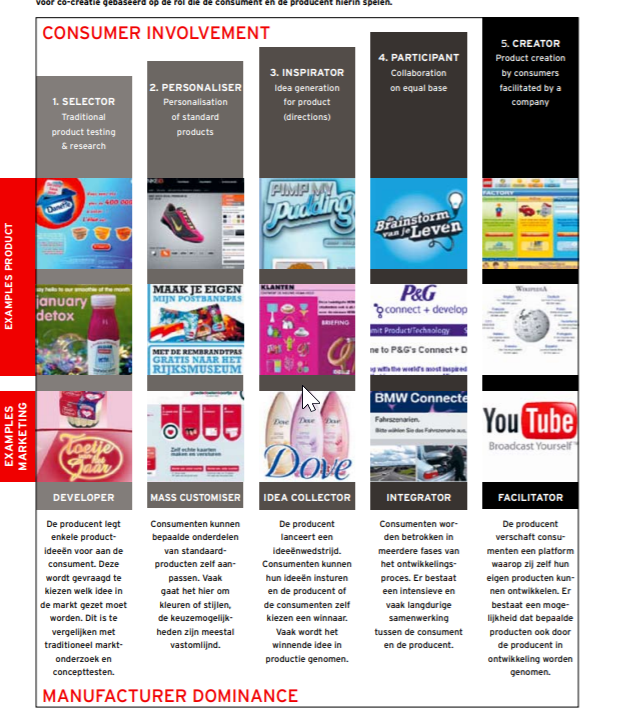
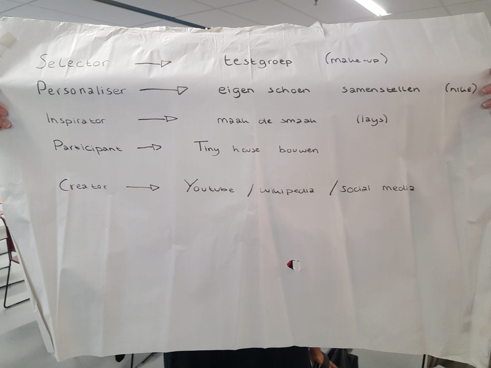

Week 1: Co-creatie
Geschreven door Mirja Vink
Tijdens de eerste workshop is er ingegaan op het onderwerp “Co-creatie”. Dit onderwerp draait om innovaties, zowel binnen een bedrijf als van producten. Bij co-creatie gaat het om het betrekken van de klanten bij die innovaties. Dit heeft verschillende voordelen. Om te beginnen zal het innovatieproces sneller gaan en worden er betere producten ontwikkelt. Verder worden gebruikers direct geïnformeerd en zal de klantrelatie verbeteren. Dit alles zal er uiteindelijk ook voor kunnen zorgen dat het imago van een bedrijf verbetert en zal het enthousiasme van de klanten voor gratis publiciteit en een snelle steun in de markt kunnen zorgen.
Er zijn vijf vormen van co-creatie, namelijk:
- Selector: de producent legt enkele productideeën voor aan de consument. Deze wordt gevraagd welk idee er in de markt gezet moet worden. Deze vorm valt te vergelijken met concepttesten en een traditioneel marktonderzoek.
- Personaliser: consumenten kunnen bepaalde onderdelen van standaardproducten zelf aanpassen.
- Inspirator: de producent lanceert een ideeënwedstrijd, waarbij consumenten hun idee in kunnen sturen.
- partcipant: de consumenten worden bij meerdere fases van het ontwikkelingsproces betrokken
- Creator: hierbij verschaft de producent consumenten een platform waarop zij zelf hun eigen producten kunnen ontwikkelen.
(TTM, 2007)
Om dit nog beter in kaart te brengen, valt in de afbeelding hieronder een schema te zien over deze vormen van cocreatie en een aantal voorbeelden hiervan.

Uiteindelijk is er in groepen gezocht naar voorbeelden bij elk van de vormen van co-creatie. Hieronder is het resultaat van mijn groep weergegeven.

Bibliografie
TTM, (2007). Co-creatie maakt klant tot ambassadeur: Van consumer naar prosumer.